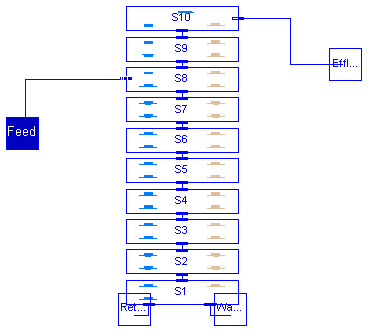
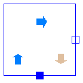

This package contains classes (layer models) to built ASM3 secondary clarifier models, an Interfaces sub-library and provides an ASM3 10-layer secondary clarifier model all bases on Otterpohls`s [1] sedimentation velocities for macro and micro flocs and the omega correction function. A secondary clarifier layer model needs at least a top_layer, a feed_layer and a bottom_layer and may have several upper_layer in between above the feed_layer and several lower_layer in between below the feed_layer. Main Author: Gerald Reichl Technische Universitaet Ilmenau Faculty of Informatics and Automation Department Dynamics and Simulation of ecological Systems P.O. Box 10 05 65 98684 Ilmenau Germany email: gerald.reichl@tu-ilmenau.de
References: [1] R. Otterpohl and M. Freund: Dynamic models for clarifiers of activated sludge plants with dry and wet weather flows. Water Science and Technology. 26 (1992), pp 1391-1400.
Copyright (C) 2003, Gerald Reichl
The Modelica package is free software; it can be redistributed and/or modified under the terms of the Modelica license, see the license conditions and the accompanying disclaimer in the documentation of package Modelica in file "Modelica/package.mo".
WasteWater.ASM3.SecClar.Otterpohl.SecClarModOtter
This component models an ASM3 10 - layer secondary clarifier model with 4 layers
above the feed_layer (including top_layer) and 5 layers below the feed_layer
(including bottom_layer) based on Otterpohl`s theory.
| Name | Default | Description |
|---|---|---|
| hsc | 4.0 | height of secondary clarifier [m] |
| n | 10 | number of layers of SC model |
| zm | hsc/(1.0*n) | height of m-th secondary clarifier layer [m] |
| Asc | 1500.0 | area of secondary clarifier [m2] |
| ISV | 130 | Sludge Volume Index [ml/g] |
| i | 2 | number of layers above current feed layer in this model |
model SecClarModOtter
"Secondary Clarifier Model based on Otterpohl (ASM3)"
extends WasteWater.Icons.SecClar;
extends ASM3.SecClar.Otterpohl.Interfaces.ratios;
package SCP = ASM3.SecClar.Otterpohl;
package SI = Modelica.SIunits;
package WI = ASM3.Interfaces;
package WWU = WasteWater.WasteWaterUnits;
parameter SI.Length hsc=4.0 "height of secondary clarifier";
parameter Integer n=10 "number of layers of SC model";
parameter SI.Length zm=hsc/(1.0*n) "height of m-th secondary clarifier layer";
parameter SI.Area Asc=1500.0 "area of secondary clarifier";
parameter WWU.SludgeVolumeIndex ISV=130 "Sludge Volume Index";
parameter Integer i=2
"number of layers above current feed layer in this model";
// total sludge concentration in clarifier feed
WWU.MassConcentration Xf;
// layers 1 to 10
SCP.bottom_layer S1(
zm=zm,
Asc=Asc,
ISV=ISV,
rXi=rXi,
rXs=rXs,
rXh=rXh,
rXsto=rXsto,
rXa=rXa);
SCP.lower_layer S2(
hsc=hsc,
zm=zm,
z=(zm + zm/2),
Asc=Asc,
ISV=ISV,
i=i,
Xf=Xf);
SCP.lower_layer S3(
hsc=hsc,
zm=zm,
z=(2*zm + zm/2),
Asc=Asc,
ISV=ISV,
i=i,
Xf=Xf);
SCP.lower_layer S4(
hsc=hsc,
zm=zm,
z=(3*zm + zm/2),
Asc=Asc,
ISV=ISV,
i=i,
Xf=Xf);
SCP.lower_layer S5(
hsc=hsc,
zm=zm,
z=(4*zm + zm/2),
Asc=Asc,
ISV=ISV,
i=i,
Xf=Xf);
SCP.lower_layer S6(
hsc=hsc,
zm=zm,
z=(5*zm + zm/2),
Asc=Asc,
ISV=ISV,
i=i,
Xf=Xf);
SCP.lower_layer S7(
hsc=hsc,
zm=zm,
z=(6*zm + zm/2),
Asc=Asc,
ISV=ISV,
i=i,
Xf=Xf);
SCP.feed_layer S8(
hsc=hsc,
zm=zm,
z=(7*zm + zm/2),
Asc=Asc,
ISV=ISV,
i=i,
Xf=Xf);
SCP.upper_layer S9(
zm=zm,
Asc=Asc,
ISV=ISV);
SCP.top_layer S10(
zm=zm,
Asc=Asc,
ISV=ISV,
rXi=rXi,
rXs=rXs,
rXh=rXh,
rXsto=rXsto,
rXa=rXa);
WI.WWFlowAsm3in Feed;
WI.WWFlowAsm3out Effluent;
WI.WWFlowAsm3out Return;
WI.WWFlowAsm3out Waste;
equation
connect(S1.Up, S2.Dn);
connect(S2.Up, S3.Dn);
connect(S3.Up, S4.Dn);
connect(S5.Up, S6.Dn);
connect(S6.Up, S7.Dn);
connect(S7.Up, S8.Dn);
connect(S9.Up, S10.Dn);
connect(S4.Up, S5.Dn);
connect(S8.Up, S9.Dn);
connect(Feed, S8.In);
connect(S1.PQw, Waste);
connect(S10.Out, Effluent);
connect(S1.PQr, Return);
// total sludge concentration in clarifier feed
Xf = Feed.Xss;
// ratios of solid components
rXi = Feed.Xi/Xf;
rXs = Feed.Xs/Xf;
rXh = Feed.Xh/Xf;
rXsto = Feed.Xsto/Xf;
rXa = Feed.Xa/Xf;
end SecClarModOtter;
WasteWater.ASM3.SecClar.Otterpohl.bottom_layer

This class models the lowest layer of an ASM3 secondary clarifier based on Otterpohl.
No sedimentation flux (mass exchange) with underneath but hydraulic and
sedimentation flux (same direction) with above layer.
From here return and waste sludge is removed.
| Name | Default | Description |
|---|---|---|
| zm | height of m-th secondary clarifier layer [m] | |
| Asc | area of secondary clarifier [m2] | |
| ISV | Sludge Volume Index [ml/g] | |
| vS_S | 0.24 | sink velocity of mirco flocs [m/d] |
model bottom_layer "Bottom layer of Otterpohls`s SC model" package WWSC = WasteWater.ASM3.SecClar.Otterpohl.Interfaces; extends WWSC.SCParam; extends WWSC.SCVar; extends WWSC.ratios; ASM3.Interfaces.WWFlowAsm3out PQr; ASM3.Interfaces.WWFlowAsm3out PQw; WWSC.LowerLayerPin Up; equation // sink velocity vS_F = WWSC.vSfun(X_F, ISV); // sedimentation flux in bottom layer Jsm_F = 0.0; Jsm_S = 0.0; // ODE of solid component der(X_F) = ((Up.Qr + Up.Qw)/Asc*(Up.X_F - X_F) + Up.SedFlux_F)/zm; der(X_S) = ((Up.Qr + Up.Qw)/Asc*(Up.X_S - X_S) + Up.SedFlux_S)/zm; X = X_F + X_S; // ODEs of soluble components der(So) = (Up.Qr + Up.Qw)*(Up.So - So)/(Asc*zm); der(Si) = (Up.Qr + Up.Qw)*(Up.Si - Si)/(Asc*zm); der(Ss) = (Up.Qr + Up.Qw)*(Up.Ss - Ss)/(Asc*zm); der(Snh) = (Up.Qr + Up.Qw)*(Up.Snh - Snh)/(Asc*zm); der(Sn2) = (Up.Qr + Up.Qw)*(Up.Sn2 - Sn2)/(Asc*zm); der(Snox) = (Up.Qr + Up.Qw)*(Up.Snox - Snox)/(Asc*zm); der(Salk) = (Up.Qr + Up.Qw)*(Up.Salk - Salk)/(Asc*zm); // upward connection Up.vS_dn_F = vS_F; Up.X_dn_F = X_F; Up.X_dn_S = X_S; // return and waste sludge volume flow rates PQr.Q + Up.Qr = 0; PQw.Q + Up.Qw = 0; // return sludge flow, solid and soluble components (ASM3) PQr.So = So; PQr.Si = Si; PQr.Ss = Ss; PQr.Snh = Snh; PQr.Sn2 = Sn2; PQr.Snox = Snox; PQr.Salk = Salk; PQr.Xi = rXi*X; PQr.Xs = rXs*X; PQr.Xh = rXh*X; PQr.Xsto = rXsto*X; PQr.Xa = rXa*X; PQr.Xss = X; // waste sludge flow, solid and soluble components (ASM3) PQw.So = So; PQw.Si = Si; PQw.Ss = Ss; PQw.Snh = Snh; PQw.Sn2 = Sn2; PQw.Snox = Snox; PQw.Salk = Salk; PQw.Xi = rXi*X; PQw.Xs = rXs*X; PQw.Xh = rXh*X; PQw.Xsto = rXsto*X; PQw.Xa = rXa*X; PQw.Xss = X; end bottom_layer;
WasteWater.ASM3.SecClar.Otterpohl.lower_layer

This class models the layers between the influent layer (feed_layer)
and the lowest layer (bottom_layer) of an ASM3 secondary clarifier
based on Otterpohl.
Hydraulic and sedimentation flux (mass exchange in same direction)
with above and underneath layer.
Sedimentation flux is calculated based on two sedimentation velocities
(for macro and micro flocs) and the omega correction function by Haertel.
| Name | Default | Description |
|---|---|---|
| zm | height of m-th secondary clarifier layer [m] | |
| Asc | area of secondary clarifier [m2] | |
| ISV | Sludge Volume Index [ml/g] | |
| vS_S | 0.24 | sink velocity of mirco flocs [m/d] |
| hsc | height of secondary clarifier [m] | |
| i | number of layers above feed layer |
model lower_layer "Layer below influent of Otterpohl`s SC model"
package WWSC = WasteWater.ASM3.SecClar.Otterpohl.Interfaces;
extends WWSC.SCParam;
extends WWSC.SCVar;
WWU.MassConcentration Xf "sludge concentration in clarifier feed";
SI.Length z "vertical coordinate of current layer";
parameter SI.Length hsc;
parameter Integer i "number of layers above feed layer";
Real omega;
WWSC.LowerLayerPin Up;
WWSC.LowerLayerPin Dn;
equation
// sink velocity
vS_F = WWSC.vSfun(X_F, ISV);
omega = WWSC.omega(z, Xf, hsc, zm, ISV, i);
// sedimentation flux in m-th layer sinking to lower layer
Jsm_F = if vS_F < Dn.vS_dn_F then omega*(vS_F*X_F) else omega*min(vS_F*X_F,
Dn.vS_dn_F*Dn.X_dn_F);
Jsm_S = omega*min(vS_S*X_S, vS_S*Dn.X_dn_S);
// ODE of solid component
der(X_F) = ((Up.Qr + Up.Qw)/Asc*(Up.X_F - X_F) + Up.SedFlux_F - Jsm_F)/zm;
der(X_S) = ((Up.Qr + Up.Qw)/Asc*(Up.X_S - X_S) + Up.SedFlux_S - Jsm_S)/zm;
X = X_F + X_S;
// ODEs of soluble components
der(So) = (Up.Qr + Up.Qw)*(Up.So - So)/(Asc*zm);
der(Si) = (Up.Qr + Up.Qw)*(Up.Si - Si)/(Asc*zm);
der(Ss) = (Up.Qr + Up.Qw)*(Up.Ss - Ss)/(Asc*zm);
der(Snh) = (Up.Qr + Up.Qw)*(Up.Snh - Snh)/(Asc*zm);
der(Sn2) = (Up.Qr + Up.Qw)*(Up.Sn2 - Sn2)/(Asc*zm);
der(Snox) = (Up.Qr + Up.Qw)*(Up.Snox - Snox)/(Asc*zm);
der(Salk) = (Up.Qr + Up.Qw)*(Up.Salk - Salk)/(Asc*zm);
// downward connections
Dn.Qr + Up.Qr = 0;
Dn.Qw + Up.Qw = 0;
Dn.X_F = X_F;
Dn.X_S = X_S;
Dn.SedFlux_F = -Jsm_F;
Dn.SedFlux_S = -Jsm_S;
Dn.So = So;
Dn.Si = Si;
Dn.Ss = Ss;
Dn.Snh = Snh;
Dn.Sn2 = Sn2;
Dn.Snox = Snox;
Dn.Salk = Salk;
// upward connections
Up.vS_dn_F = vS_F;
Up.X_dn_F = X_F;
Up.X_dn_S = X_S;
end lower_layer;
WasteWater.ASM3.SecClar.Otterpohl.feed_layer

This class models the influent layer of an ASM3 secondary clarifier based on Otterpohl. It receives the wastewater stream from the biological part (feed). Hydraulic and sedimentation flux (mass exchange in opposite directions) with above layer and hydraulic and sedimentation flux (mass exchange in same direction) with underneath layer. Sedimentation flux is calculated based on two sedimentation velocities (for macro and micro flocs) and the omega correction function by Haertel.
| Name | Default | Description |
|---|---|---|
| zm | height of m-th secondary clarifier layer [m] | |
| Asc | area of secondary clarifier [m2] | |
| ISV | Sludge Volume Index [ml/g] | |
| vS_S | 0.24 | sink velocity of mirco flocs [m/d] |
| hsc | height of secondary clarifier [m] | |
| i | number of layers above feed layer |
model feed_layer "Influent layer of Otterpohl`s SC model"
package WWSC = WasteWater.ASM3.SecClar.Otterpohl.Interfaces;
extends WWSC.SCParam;
extends WWSC.SCVar;
WWU.MassConcentration Xf "sludge concentration in clarifier feed";
SI.Length z "vertical coordinate of current layer";
parameter SI.Length hsc;
parameter Integer i "number of layers above feed layer";
Real omega;
Real fl;
WWSC.LowerLayerPin Dn;
WWSC.UpperLayerPin Up;
ASM3.Interfaces.WWFlowAsm3in In;
equation
// sink velocity
vS_F = WWSC.vSfun(X_F, ISV);
omega = WWSC.omega(z, Xf, hsc, zm, ISV, i);
fl = (9.4/ISV)*exp(-1.07*Xf/1000);
// sedimentation flux in m-th layer sinking to lower layer
Jsm_F = if vS_F < Dn.vS_dn_F then omega*(vS_F*X_F) else omega*min(vS_F*X_F,
Dn.vS_dn_F*Dn.X_dn_F);
Jsm_S = omega*min(vS_S*X_S, vS_S*Dn.X_dn_S);
// ODE of solid component
der(X_F) = (In.Q/Asc*Xf*(1 - fl) - (-Up.Qe)/Asc*X_F - (-(Dn.Qr + Dn.Qw))/Asc*
X_F + Up.SedFlux_F - Jsm_F)/zm;
der(X_S) = (In.Q/Asc*Xf*fl - (-Up.Qe)/Asc*X_S - (-(Dn.Qr + Dn.Qw))/Asc*X_S +
Up.SedFlux_S - Jsm_S)/zm;
X = X_F + X_S;
// ODE of soluble components
der(So) = (In.Q*In.So - (-Up.Qe)*So - (-(Dn.Qr + Dn.Qw))*So)/(Asc*zm);
der(Si) = (In.Q*In.Si - (-Up.Qe)*Si - (-(Dn.Qr + Dn.Qw))*Si)/(Asc*zm);
der(Ss) = (In.Q*In.Ss - (-Up.Qe)*Ss - (-(Dn.Qr + Dn.Qw))*Ss)/(Asc*zm);
der(Snh) = (In.Q*In.Snh - (-Up.Qe)*Snh - (-(Dn.Qr + Dn.Qw))*Snh)/(Asc*zm);
der(Sn2) = (In.Q*In.Sn2 - (-Up.Qe)*Sn2 - (-(Dn.Qr + Dn.Qw))*Sn2)/(Asc*zm);
der(Snox) = (In.Q*In.Snox - (-Up.Qe)*Snox - (-(Dn.Qr + Dn.Qw))*Snox)/(Asc*zm)
;
der(Salk) = (In.Q*In.Salk - (-Up.Qe)*Salk - (-(Dn.Qr + Dn.Qw))*Salk)/(Asc*zm)
;
// volume flow rates
In.Q + Up.Qe + Dn.Qr + Dn.Qw = 0;
Dn.SedFlux_F = -Jsm_F;
Dn.SedFlux_S = -Jsm_S;
Dn.X_F = X_F;
Dn.X_S = X_S;
Dn.So = So;
Dn.Si = Si;
Dn.Ss = Ss;
Dn.Snh = Snh;
Dn.Sn2 = Sn2;
Dn.Snox = Snox;
Dn.Salk = Salk;
Up.X_dn_F = X_F;
Up.X_dn_S = X_S;
Up.So = So;
Up.Si = Si;
Up.Ss = Ss;
Up.Snh = Snh;
Up.Sn2 = Sn2;
Up.Snox = Snox;
Up.Salk = Salk;
end feed_layer;
WasteWater.ASM3.SecClar.Otterpohl.upper_layer

This class models the layers between the influent layer (feed_layer) and the
effluent layer (top_layer) of an ASM3 secondary clarifier based on Otterpohl.
Hydraulic and sedimentation flux (mass exchange in opposite directions) with
above and underneath layer.
Sedimentation flux is calculated based on two sedimentation velocities
(for macro and micro flocs).
| Name | Default | Description |
|---|---|---|
| zm | height of m-th secondary clarifier layer [m] | |
| Asc | area of secondary clarifier [m2] | |
| ISV | Sludge Volume Index [ml/g] | |
| vS_S | 0.24 | sink velocity of mirco flocs [m/d] |
model upper_layer "Layer above influent of Otterpohl`s SC" package WWSC = WasteWater.ASM3.SecClar.Otterpohl.Interfaces; extends WWSC.SCParam; extends WWSC.SCVar; WWSC.UpperLayerPin Dn; WWSC.UpperLayerPin Up; equation // sink velocity vS_F = WWSC.vSfun(X_F, ISV); // sedimentation flux in m-th layer sinking to lower layer Jsm_F = vS_F*X_F; Jsm_S = vS_S*X_S; // ODE of solid component der(X_F) = (Dn.Qe/Asc*(Dn.X_dn_F - X_F) + Up.SedFlux_F - Jsm_F)/zm; der(X_S) = (Dn.Qe/Asc*(Dn.X_dn_S - X_S) + Up.SedFlux_S - Jsm_S)/zm; X = X_F + X_S; // ODEs of soluble components der(So) = Dn.Qe*(Dn.So - So)/(Asc*zm); der(Si) = Dn.Qe*(Dn.Si - Si)/(Asc*zm); der(Ss) = Dn.Qe*(Dn.Ss - Ss)/(Asc*zm); der(Snh) = Dn.Qe*(Dn.Snh - Snh)/(Asc*zm); der(Sn2) = Dn.Qe*(Dn.Sn2 - Sn2)/(Asc*zm); der(Snox) = Dn.Qe*(Dn.Snox - Snox)/(Asc*zm); der(Salk) = Dn.Qe*(Dn.Salk - Salk)/(Asc*zm); // downward connection Dn.SedFlux_F = -Jsm_F; Dn.SedFlux_S = -Jsm_S; // upward connections Up.Qe + Dn.Qe = 0; Up.X_dn_F = X_F; Up.X_dn_S = X_S; Up.So = So; Up.Si = Si; Up.Ss = Ss; Up.Snh = Snh; Up.Sn2 = Sn2; Up.Snox = Snox; Up.Salk = Salk; end upper_layer;
WasteWater.ASM3.SecClar.Otterpohl.top_layer
This class models the top layer of an ASM3 secondary clarifier based on Otterpohl.
No sedimentation flux (mass exchange) with above but hydraulic and sedimentation flux
(opposite directions) underneath. From here effluent goes to the receiving water.
Sedimentation flux is calculated based on two sedimentation velocities
(for micro and macro flocs).
| Name | Default | Description |
|---|---|---|
| zm | height of m-th secondary clarifier layer [m] | |
| Asc | area of secondary clarifier [m2] | |
| ISV | Sludge Volume Index [ml/g] | |
| vS_S | 0.24 | sink velocity of mirco flocs [m/d] |
model top_layer "Effluent layer of Otterpohl`s SC model" package WWSC = WasteWater.ASM3.SecClar.Otterpohl.Interfaces; extends WWSC.SCParam; extends WWSC.SCVar; extends WWSC.ratios; WWSC.UpperLayerPin Dn; ASM3.Interfaces.WWFlowAsm3out Out; equation // sink velocity vS_F = WWSC.vSfun(X_F, ISV); // sedimentation flux in m-th layer sinking to lower layer Jsm_F = vS_F*X_F; Jsm_S = vS_S*X_S; // ODE of solid component der(X_F) = (Dn.Qe/Asc*(Dn.X_dn_F - X_F) - Jsm_F)/zm; der(X_S) = (Dn.Qe/Asc*(Dn.X_dn_S - X_S) - Jsm_S)/zm; X = X_F + X_S; // ODEs of soluble components der(So) = Dn.Qe*(Dn.So - So)/(Asc*zm); der(Si) = Dn.Qe*(Dn.Si - Si)/(Asc*zm); der(Ss) = Dn.Qe*(Dn.Ss - Ss)/(Asc*zm); der(Snh) = Dn.Qe*(Dn.Snh - Snh)/(Asc*zm); der(Sn2) = Dn.Qe*(Dn.Sn2 - Sn2)/(Asc*zm); der(Snox) = Dn.Qe*(Dn.Snox - Snox)/(Asc*zm); der(Salk) = Dn.Qe*(Dn.Salk - Salk)/(Asc*zm); // downward connection Dn.SedFlux_F = -Jsm_F; Dn.SedFlux_S = -Jsm_S; // effluent volume flow rate Out.Q + Dn.Qe = 0; // effluent, solid and soluble components (ASM3) Out.So = So; Out.Si = Si; Out.Ss = Ss; Out.Snh = Snh; Out.Sn2 = Sn2; Out.Snox = Snox; Out.Salk = Salk; Out.Xi = rXi*X; Out.Xs = rXs*X; Out.Xh = rXh*X; Out.Xsto = rXsto*X; Out.Xa = rXa*X; Out.Xss = X; end top_layer;